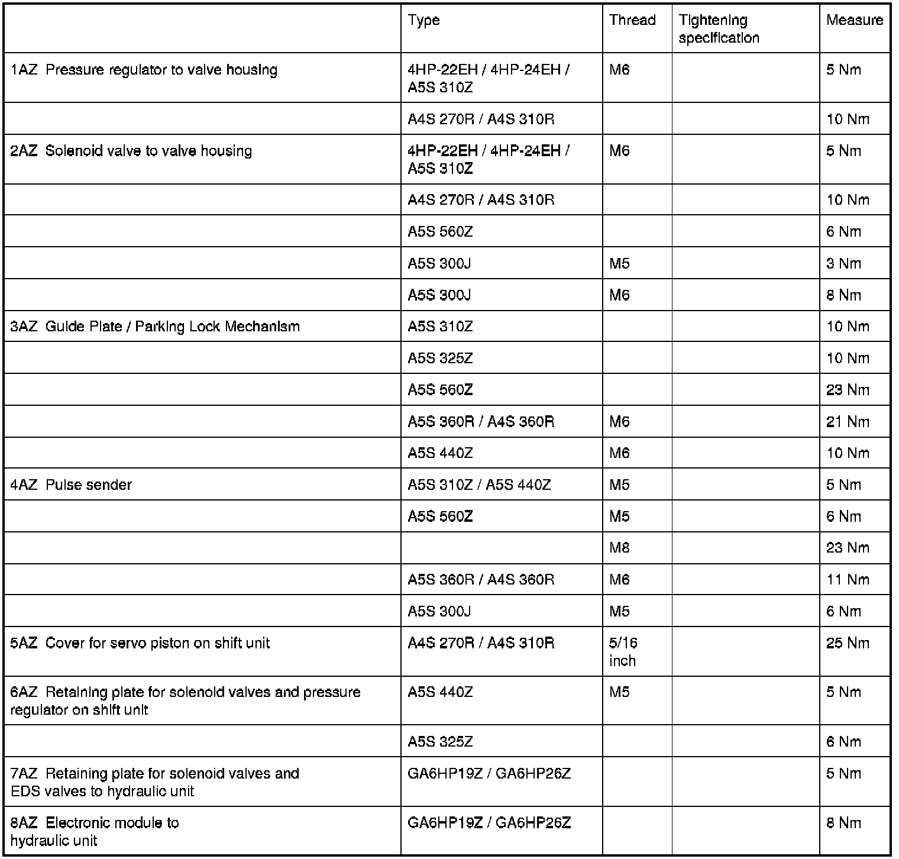

Operation CHARM
: Car repair manuals for everyone.
Home
>>
BMW
>>
2007
>>
X3 3.0si (E83) L6-3.0L (N52K)
>>
Repair and Diagnosis
>>
Specifications
>>
Mechanical Specifications
>>
Automatic Transmission/Transaxle
>>
Valve Body, A/T
>>
Shift Travel Valves, Parking Lock
Shift Travel Valves, Parking Lock
24 34 Shift travel valves, parking lock
